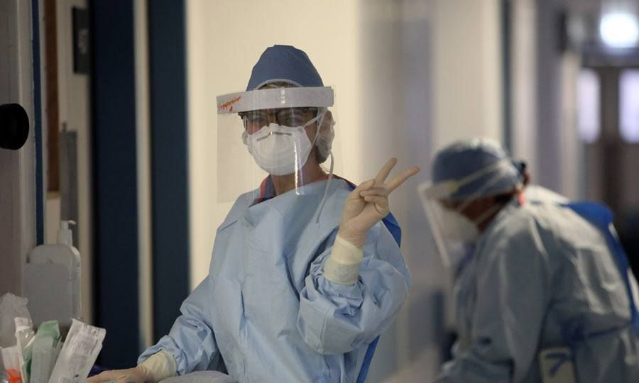

Τελευταία Νέα
Νέα ανακοίνωση υπ. Υγείας: Τρία κρούσματα από επαναπατρισθέντες Ο συνολικός αριθμός των θετικών κρουσμάτων ανήλθε στα 983.
Σύμφωνα με νεότερη ενημέρωση που έλαβε η Μονάδα Επιδημιολογικής Επιτήρησης από συμβαλλόμενο εργαστήριο, ολοκληρώθηκε αργά το απόγευμα η εργαστηριακή εξέταση 58 επιπλέων δειγμάτων που λήφθηκαν από επαναπατρισθέντες, από τα οποία εντοπίστηκαν τρία κρούσματα του ιού SARS-CoV-2. Σημειώνεται πως έχουν δρομολογηθεί όλες οι διαδικασίες που προβλέπονται από τα σχετικά πρωτόκολλα για τις στενές επαφές των ατόμων. Συνεπώς, ο συνολικός αριθμός εργαστηριακών διαγνώσεων που διεκπεραιώθηκαν σήμερα είναι 1,252. Ο συνολικός αριθμός των θετικών κρουσμάτων ανήλθε στα 983..
Σε ό,τι αφορά στα νέα περιστατικά της νόσου COVID-19, σύμφωνα με τα δεδομένα από τη Μονάδα Επιδημιολογικής Επιτήρησης του Υπουργείου Υγείας, από σύνολο 1,194 εργαστηριακών διαγνώσεων δεν εντοπίστηκαν κρούσματα του ιού SARS-CoV-2. Αναλυτικά, διεκπεραιώθηκαν οι ακόλουθες διαγνώσεις, χωρίς τον εντοπισμό κρούσματος: -Από τη διαδικασία της ιχνηλάτησης των επαφών ήδη επιβεβαιωμένων κρουσμάτων, διεκπεραιώθηκαν 42 διαγνώσεις, -Από τον έλεγχο επιβατών, είχαμε αποτέλεσμα για 331 δείγματα, -Από το πρόγραμμα ελέγχου 10,000 εργαζομένων σε κομμωτήρια, κουρεία, ινστιτούτα αισθητικής, κέντρα δερματοστιξίας και χώρους εστίασης, ολοκληρώθηκαν 256 εργαστηριακές διαγνώσεις, -Από το πρόγραμμα ελέγχου 20,000 μαθητών και προσωπικού σχολικών μονάδων, είχαμε αποτελέσματα για 141 εργαστηριακές εξετάσεις, -Από τα Μικροβιολογικά Εργαστήρια των Γενικών Νοσοκομείων, ολοκληρώθηκαν 133 εργαστηριακές διαγνώσεις, -Από το πρόγραμμα παραπομπών από Προσωπικούς Ιατρούς και ελέγχου ειδικών ομάδων μέσω των Ιατρείων Δημόσιας Υγείας, διεκπεραιώθηκαν 191 εργαστηριακές εξετάσεις, και -Από ιδιωτική πρωτοβουλία, διεκπεραιώθηκαν 100 εργαστηριακές διαγνώσεις. Με βάση και τα σημερινά δεδομένα, ο συνολικός αριθμός των θετικών κρουσμάτων παρέμεινε 980. Επιπλέον, μέχρι σήμερα το απόγευμα, στο Γενικό Νοσοκομείο Αμμοχώστου παραμένουν νοσηλευόμενοι δύο ασθενείς. Επίσης, στη Μονάδα Εντατικής Θεραπείας του Γενικού Νοσοκομείου Λευκωσίας εξακολουθούν να νοσηλεύονται διασωληνωμένοι δύο ασθενείς.
Τροχαίο Φθιώτιδα: Τραυματίστηκε σοβαρά στο κεφάλι 4χρονο κορίτσι

Τροχαίο Φθιώτιδα: Άσχημα είναι τα νέα που έρχονται από την Μακρακώμη, καθώς υπήρξε σοβαρό ατύχημα όταν 4χρονο κοριτσάκι χτυπήθηκε από διερχόμενο όχημα.
Ένα 4χρονο κορίτσι νοσηλεύεται σε νοσοκομείο της Αθήνας μετά από σοβαρό τροχαίο ατύχημα που έγινε στη Μακρακώμη Φθιώτιδας. Σύμφωνα με το lamiareport.gr, το άτυχο κοριτσάκι χτυπήθηκε από αυτοκίνητο στην είσοδο της Μακρακώμης στο ύψος του «Γαλαξία».
Έρευνα κορωνοϊός: Η πανδημία ενίσχυσε την επιρροή της Κίνας και μείωσε των ΗΠΑ

Έρευνα κορωνοϊός: Η έρευνα πραγματοποιήθηκε με το Berteslmann Foundation στη Γερμανία και το Institut Montaigne στο Παρίσι. Ερωτήθηκαν περισσότερα από 1.000 άτομα σε κάθε χώρα.
Η πανδημία του κορωνοϊού – σύμφωνα με έρευνα – έκανε αυξημένο αριθμό Δυτικών να βλέπει την Κίνα ως μια δύναμη πρώτου επιπέδου. Αντίθετα η έρευνα σημειώνει ότι η επιρροή των ΗΠΑ βρίσκεται σε ύφεση. Τα στοιχεία καταγράφει μεγάλη δημοσκόπηση που πραγματοποιήθηκε για το θέμα μεταξύ Γάλλων, Γερμανών και Αμερικανών από το κέντρο σκέψης “German Marshall Fund of the United States”.